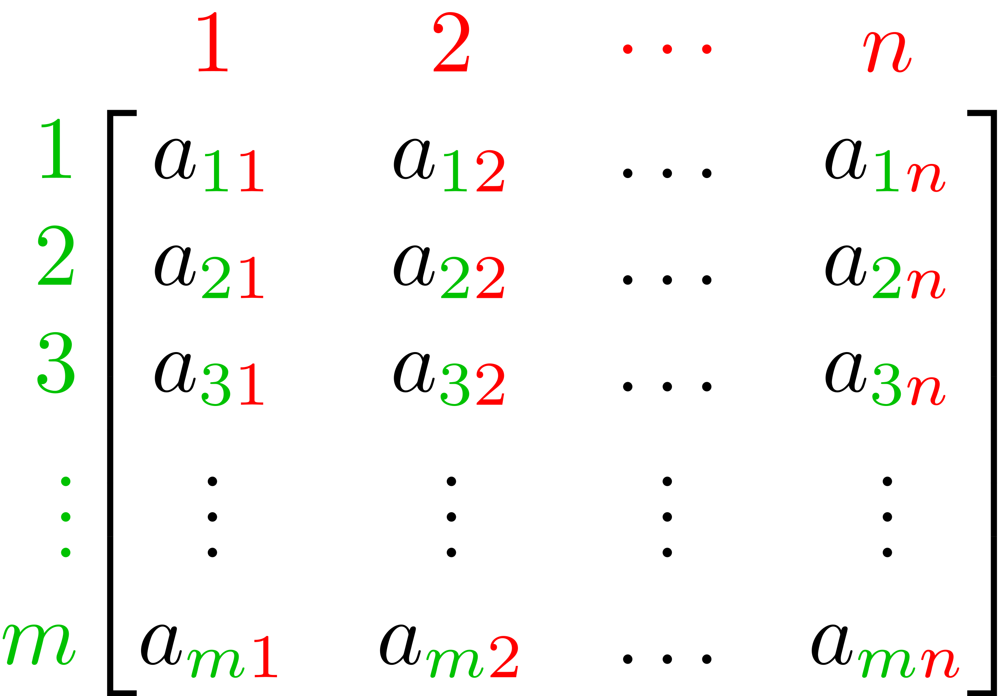

TME 310 - Computational Physical Modeling
University of Washington Tacoma
What is a “matrix”?
A rectangular array of numbers or other mathematical objects with elements or entries arranged in rows and columns.
Often, we use uppercase letters to represent an entire matrix and lowercase versions of the same letter to represent the individual elements within the matrix. For example…
The elements in matrix \(A\) might be referred to as \(a_{ij}\), where \(i \to\) row and \(j \to\) column.

We describe the size of a matrix by its number of rows and columns. The matrix \(A\) depicted below is an \(m\)-by-\(n\) matrix (\(m\) rows and \(n\) columns).
We will use Numpy to work with matrices in Python. They are 2-D versions of the arrays we’ve been working with already.
To create a 2-D Numpy array, we pass a list of lists to the np.array() function. Each sublist contains the elements in a single row of the matrix. The length of each sublist (which must all be equal) is the number of columns in the matrix.
Access matrix elements with comma-separated indexing. The first index refers to the row and the second refers to the column.
We can perform several basic mathematical operations with matrices, but there are special rules depending on the kinds of objects involved in the opperation:
For basic operations (\(+\), \(-\), \(\times\), \(\div\)) between a scalar and a matrix, the operation is performed between the scalar and every element in the matrix.
For example, if \(B = w \times A\),
\[B = \begin{bmatrix} w \times a_{11} & w \times a_{12} & \cdots & w \times a_{1n} \\ w \times a_{21} & w \times a_{22} & \cdots & w \times a_{2n} \\ \vdots & \vdots & \ddots & \vdots \\ w \times a_{m1} & w \times a_{m2} & \cdots & w \times a_{mn} \end{bmatrix}\]
\[3 + \begin{bmatrix} 2 & -1 & 4 \\ 0 & 5 & -2 \end{bmatrix} = \begin{bmatrix} 5 & 2 & 7 \\ 3 & 8 & 1 \end{bmatrix}\]
Addition and subtraction between matrices is always performed elementwise (multiplication and division can be, but not always).
Constraint: matrix dimension must match exactly
\[A_{m\times n} + B_{m\times n} = C_{m\times n}\]
\[C = \begin{bmatrix} a_{11} + b_{11} & a_{12}+ b_{12} & \cdots & a_{1n}+ b_{1n} \\ a_{21} + b_{21}& a_{22}+ b_{22} & \cdots & a_{2n}+ b_{2n} \\ \vdots & \vdots & \ddots & \vdots \\ a_{m1} + b_{m1} & a_{m2}+ b_{m2} & \cdots & a_{mn}+ b_{mn} \end{bmatrix}\]
\[A = \begin{bmatrix} 2 & -1 & 4 \\ 0 & 5 & -2 \end{bmatrix}; \quad B = \begin{bmatrix} 1 & -1 & 2 \\ 7 & 0 & 8 \end{bmatrix}\]
[[ 2 1 8]
[ 0 0 -16]]NOTE: this is elementwise multiplication, not matrix multiplication
--------------------------------------------------------------------------- ValueError Traceback (most recent call last) Cell In[12], line 3 1 B_2x2 = np.array([[1, -1], 2 [7, 0]]) ----> 3 print(A+B_2x2) ValueError: operands could not be broadcast together with shapes (2,3) (2,2)
It is possible to perform elementwise multiplication and division, but generally matrix multiplication means something different.
In order to multiply two matrices,\(\ A \times B\), the number of columns in the first matrix (\(A\)) must equal the number of rows in the second matrix (\(B)\).
The result of this operation, \(C\), is a matrix with the same number of rows as the first matrix and the same number of columns as the second matrix.
\[ A_{\color{blue}{n}\times \color{red}{m}}\ \times \ B_{\color{red}{m}\times \color{green}{p}} = C_{\color{blue}{n} \times \color{green}{p}}\]
Because of the rules of matrix multiplication, the operation is non-commutative:
\[A \times B \neq B \times A\]
In fact, if \(A \times B\) is a valid operation, it’s not guaranteed that \(B \times A\) is valid.
For example, if \(A\) is a 4-by-2 matrix and \(B\) is a 2-by-3 matrix,
Valid: \(A \times B\)
Invalid: \(B \times A\)
The element \(c_{ij}\) in the product matrix \(C = A \times B\) is calculated as:
\[c_{ij} = \sum_{k=1}^{m} a_{ik} b_{kj}\]
For example: \[c_{11} = a_{11}b_{11} + a_{12}b_{21} + a_{13}b_{31} + \cdots + a_{1m}b_{m1}\]
\[\begin{bmatrix} a_{11} & a_{12}\\ a_{21} & a_{22} \\ a_{31} & a_{32} \\ a_{41} & a_{42} \\ \end{bmatrix} \times \begin{bmatrix} b_{11} & b_{12} & b_{13} \\ b_{21} & b_{22} & b_{23} \\ \end{bmatrix} = \begin{bmatrix} c_{11} & c_{12} & c_{13} \\ c_{21} & c_{22} & c_{23} \\ c_{31} & c_{32} & c_{33} \\ c_{41} & c_{42} & c_{43} \\ \end{bmatrix}\]
\[ c_{11} = a_{11}b_{11} + a_{12}b_{21} \\ \vdots \\ c_{43} = a_{41}b_{13} + a_{42}b_{23} \]
In Python, we use a special operator on Numpy arrays for matrix multiplication: @
A has shape (3, 3)
B has shape (2, 3)--------------------------------------------------------------------------- ValueError Traceback (most recent call last) Cell In[16], line 8 6 print(f"A has shape {A.shape}") 7 print(f"B has shape {B.shape}") ----> 8 C = A @ B 9 print(f"C has shape {C.shape}") 10 print(C) ValueError: matmul: Input operand 1 has a mismatch in its core dimension 0, with gufunc signature (n?,k),(k,m?)->(n?,m?) (size 2 is different from 3)
A has shape (3, 3)
B has shape (3, 3)
C has shape (3, 3)
[[ 8 77 58]
[18 47 32]
[28 44 27]]A has shape (3, 3)
B has shape (3, 3)
C has shape (3, 3)
[[ 5 8 20]
[14 20 35]
[62 78 57]]There isn’t a division matrix operation that corresponds to matrix multiplication like traditional multiplication and division. However, for certain square matrices, multiplying by the inverse of the matrix produces a similar effect to division:
\[A \times A^{-1} = I\]
The identity matrix, \(I\), is a square matrix with ones on the main diagonal and zeros elsewhere.
\[I_3 = \begin{bmatrix} 1 & 0 & 0 \\ 0 & 1 & 0 \\ 0 & 0 & 1 \end{bmatrix}\]
Key property: Multiplying any matrix by the identity matrix leaves it unchanged:
\[A \times I = I \times A = A\]
The identity matrix plays the same role in matrix multiplication that the number \(1\) plays in regular multiplication.
We will use the scipy.linalg Python module to perform matrix inversion.
ValueError: expected square matrix
[[ 1.00000000e+00 -2.77555756e-17 -1.11022302e-16]
[ 0.00000000e+00 1.00000000e+00 -2.22044605e-16]
[ 8.32667268e-17 -6.93889390e-18 1.00000000e+00]]There are several useful applications for matrices in engineering.
In this class, we will focus on solving systems of equations